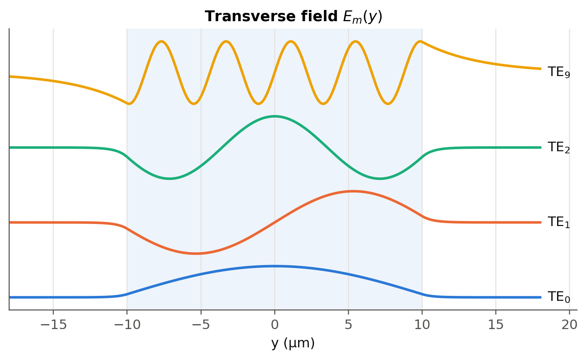
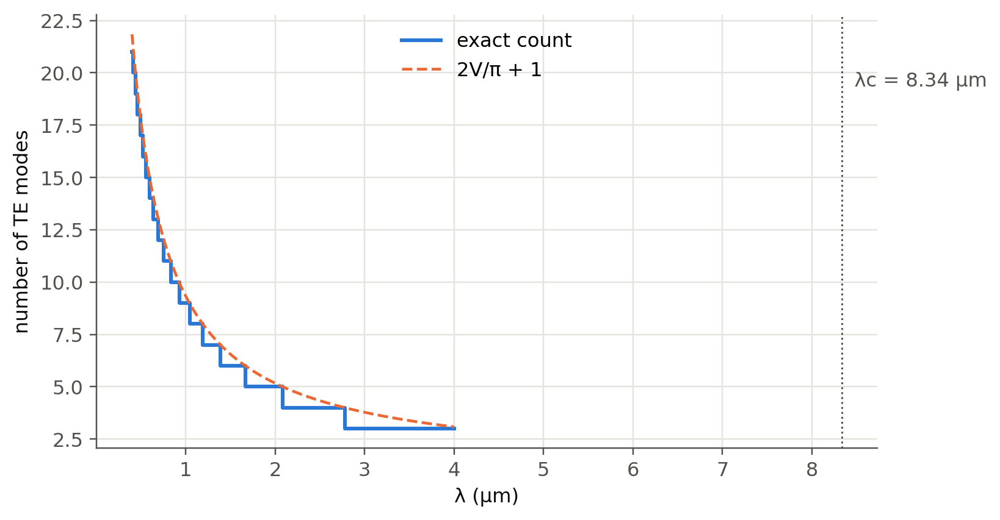
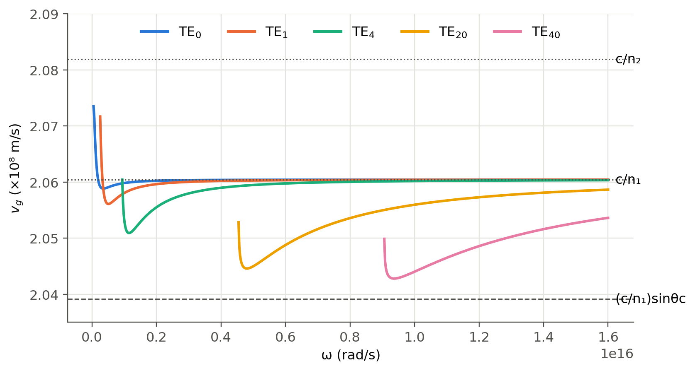

1 Planar dielectric waveguides
 Run this chapter’s code in Google Colab (no installation).
Run this chapter’s code in Google Colab (no installation).
Slides 7–39. A core of index \(n_1\) and thickness \(2a\) sandwiched between two claddings of index \(n_2<n_1\). It is the simplest waveguide, and almost everything we will say about fibers already appears here: modes, cut-off, the \(V\)-number, evanescent tails and dispersion.
1.1 The waveguide condition
A ray zig-zagging at angle \(\theta\) (from the normal) must interfere constructively with itself after two reflections (slides 9–11). With \(k_1=2\pi n_1/\lambda\) and a phase change \(\phi\) at each total internal reflection (TIR):
\[ \frac{2\pi n_1 (2a)}{\lambda}\cos\theta_m-\phi_m=m\pi ,\qquad m=0,1,2,\dots \tag{1.1}\]
The TIR phase for TE (E along \(x\), perpendicular to the plane of incidence) and TM polarisation is
\[ \tan\frac{\phi_m}{2}=\frac{\sqrt{\sin^2\theta_m-(n_2/n_1)^2}}{\cos\theta_m}\;(\text{TE}),\qquad \tan\frac{\phi_m}{2}=\frac{\sqrt{\sin^2\theta_m-(n_2/n_1)^2}}{(n_2/n_1)^2\cos\theta_m}\;(\text{TM}). \]
Each allowed angle \(\theta_m\) is a mode. Its propagation constant along the guide is \(\beta_m=k_1\sin\theta_m\), and the transverse one is \(\kappa_m=k_1\cos\theta_m\) (slide 12). We can write \(\beta_m = k_0 n_\text{eff}\) with \(n_2<n_\text{eff}=n_1\sin\theta_m<n_1\).
1.1.1 Graphical solution, live
Introduce \(u=k_1 a\cos\theta\) and \(w=a\sqrt{\beta^2-k_0^2n_2^2}\). Then \(u^2+w^2=V^2\), and Equation 1.1 becomes the classic pair (TE):
\[ w = u\tan u \;\;(\text{even modes } m=0,2,\dots),\qquad w = -u\cot u \;\;(\text{odd modes } m=1,3,\dots). \]
The guided modes are the intersections of these curves with the circle of radius \(V\). Move the slider: a new mode appears each time \(V\) crosses a multiple of \(\pi/2\).
1.2 Worked example: the 20 µm guide (slides 24–26)
A planar guide with \(2a=20\) µm, \(n_1=1.455\), \(n_2=1.440\), \(\lambda=900\) nm. Find the modes.
Show the Python
d, wl, n1, n2 = 20e-6, 900e-9, 1.455, 1.440
th = fl.slab_modes(d, wl, n1, n2, "TE")
pen = fl.slab_penetration(th, wl, n1, n2)
V = fl.V_number(d / 2, wl, n1, n2)
import pandas as pd
tab = pd.DataFrame({"m": range(len(th)),
"θ_m (deg)": np.degrees(th).round(1),
"δ_m (µm)": (pen * 1e6).round(3),
"n_eff": (n1 * np.sin(th)).round(4)})
print(f"V = {V:.2f}, critical angle θc = {np.degrees(np.arcsin(n2/n1)):.2f}°, "
f"number of TE modes = {len(th)} (TM: {len(fl.slab_modes(d, wl, n1, n2, 'TM'))})")
tab.style.hide(axis="index")V = 14.55, critical angle θc = 81.77°, number of TE modes = 10 (TM: 10)| m | θ_m (deg) | δ_m (µm) | n_eff |
|---|---|---|---|
| 0 | 89.200000 | 0.691000 | 1.454800 |
| 1 | 88.300000 | 0.702000 | 1.454400 |
| 2 | 87.500000 | 0.721000 | 1.453600 |
| 3 | 86.700000 | 0.751000 | 1.452600 |
| 4 | 85.900000 | 0.796000 | 1.451200 |
| 5 | 85.000000 | 0.862000 | 1.449600 |
| 6 | 84.200000 | 0.966000 | 1.447600 |
| 7 | 83.400000 | 1.146000 | 1.445400 |
| 8 | 82.600000 | 1.544000 | 1.443000 |
| 9 | 81.900000 | 3.864000 | 1.440500 |
The table reproduces slide 26 exactly. Notice two trends.
- Higher modes travel at steeper angles (smaller \(\theta_m\), closer to \(\theta_c\)).
- Higher modes have a larger penetration \(\delta_m\) into the cladding, and it diverges near cut-off.
1.2.1 Mode field patterns
Inside the core the field is a standing wave \(\cos(\kappa y)\) or \(\sin(\kappa y)\). In the cladding it decays as \(\exp(-|y|/\delta_m)\) (slides 16–20).
Show the Python
y = np.linspace(-18e-6, 18e-6, 1500)
fig, ax = plt.subplots(figsize=(8, 4))
ax.axvspan(-10, 10, color=fl.PALETTE[0], alpha=0.08, lw=0)
for k, m in enumerate([0, 1, 2, 9]):
E = fl.slab_field(y, d, wl, n1, n2, th[m], m)
ax.plot(y * 1e6, E + 2.4 * k, color=fl.PALETTE[k])
ax.text(18.5, 2.4 * k, f"TE$_{m}$", va="center", color=fl.INK)
ax.set_xlabel("y (µm)"); ax.set_yticks([]); ax.set_xlim(-18, 20.5)
ax.set_title("Transverse field $E_m(y)$")
plt.show()
1.2.2 Mode field width (slide 29)
A semi-quantitative width is \(2w_0 = 2a + 2\delta\). For a single-mode slab this becomes \(2w_0 \approx 2a\,(V+1)/V\). We will see a more rigorous definition for fibers (MFD).
1.3 \(V\)-number and number of modes (slides 22, 28)
\[ V=\frac{2\pi a}{\lambda}\sqrt{n_1^2-n_2^2},\qquad M=\left\lfloor \frac{2V}{\pi}\right\rfloor+1 . \]
For \(V<\pi/2\) only TE\(_0\) (and TM\(_0\)) propagate. The cut-off wavelength is \(\lambda_c = 4a\sqrt{n_1^2-n_2^2}\). Above it the slab is single-mode.
Show the Python
wls = np.linspace(0.4e-6, 4e-6, 400)
counts = [len(fl.slab_modes(d, w, n1, n2)) for w in wls]
Vs = fl.V_number(d / 2, wls, n1, n2)
fig, ax = plt.subplots()
ax.step(wls * 1e6, counts, where="mid", label="exact count")
ax.plot(wls * 1e6, 2 * Vs / np.pi + 1, "--", color=fl.PALETTE[1], lw=1.5, label="2V/π + 1")
ax.set_xlabel("λ (µm)"); ax.set_ylabel("number of TE modes"); ax.legend()
lc = 4 * (d / 2) * np.sqrt(n1**2 - n2**2)
ax.axvline(lc * 1e6, color=fl.INK2, lw=1, ls=":")
ax.text(lc * 1e6, ax.get_ylim()[1] * 0.85, f" λc = {lc*1e6:.2f} µm", color=fl.INK2)
plt.show()
1.4 Dispersion diagram and group velocity (slides 30–39)
Each mode has its own \(\beta_m(\omega)\). The group velocity is the slope \(v_g = d\omega/d\beta\). Here we compute it exactly, with non-dispersive \(n_1\), \(n_2\) so that only the waveguide effect remains. These are the “calculations by the author” curves of slides 32–36.
Show the Python
def vg_curve(m, omegas):
beta = np.array([fl.slab_beta(w, d, n1, n2, m) for w in omegas])
return np.gradient(omegas, beta)
omegas = np.linspace(0.05e15, 1.6e16, 700)
fig, ax = plt.subplots(figsize=(8, 4.4))
for k, m in enumerate([0, 1, 4, 20, 40]):
vg = vg_curve(m, omegas)
ok = np.isfinite(vg)
ax.plot(omegas[ok], vg[ok] / 1e8, color=fl.PALETTE[k], label=f"TE$_{{{m}}}$")
ax.axhline(c0 / n2 / 1e8, color=fl.INK2, ls=":", lw=1); ax.text(1.61e16, c0/n2/1e8, " c/n₂", va="center")
ax.axhline(c0 / n1 / 1e8, color=fl.INK2, ls=":", lw=1); ax.text(1.61e16, c0/n1/1e8, " c/n₁", va="center")
ax.axhline(c0 * n2 / n1**2 / 1e8, color=fl.INK2, ls="--", lw=1)
ax.text(1.61e16, c0*n2/n1**2/1e8, " (c/n₁)sinθc", va="center")
ax.set_xlabel("ω (rad/s)"); ax.set_ylabel("$v_g$ (×10⁸ m/s)"); ax.legend(ncol=5, loc="upper center")
ax.set_ylim(2.035, 2.09)
plt.show()
TipWhy can TE\(_1\) be faster than TE\(_0\)? (slide 38)
Near cut-off, a mode carries a large fraction of its power in the cladding, where light is faster (\(c/n_2\)). The ray picture (steeper ray means a longer path) is then not the whole story. The evanescent tail matters.
1.4.1 Intermodal dispersion of the slab
Far from cut-off the fastest mode travels at \(\approx c/n_1\) and the slowest at \(\approx (c/n_1)\sin\theta_c=c\,n_2/n_1^2\). The spread over a length \(L\) is therefore
\[ \frac{\Delta\tau}{L}\approx\frac{n_1-n_2}{c}\cdot\frac{n_1}{n_2}\approx\frac{n_1-n_2}{c}. \]
Show the Python
print(f"Δτ/L ≈ (n1-n2)/c = {(n1-n2)/c0*1e12*1e3/1e3:.1f} ps/m = {(n1-n2)/c0*1e9*1e3:.0f} ns/km")Δτ/L ≈ (n1-n2)/c = 50.0 ps/m = 50 ns/kmAt 50 ns/km a 1 ns pulse becomes 50 ns long after 1 km. This is why multimode guides are limited to short links.
1.5 Try it yourself
- Use
fl.slab_modes(..., "TM")and compare TE and TM angles. Which polarisation is more confined, and why (look at the \((n_2/n_1)^2\) factor)? - Find the thickness \(2a\) that makes the 20 µm-type guide single-mode at 1.55 µm.
- Asymmetric slab (new): replace one cladding by air (\(n_3=1\)). The condition becomes \(2k_1a\cos\theta-\phi_{12}-\phi_{13}=2\pi m\). Write a 10-line solver and show that this guide has a non-zero cut-off even for the fundamental mode, unlike the symmetric one.
- Compare with the online mode solver cited on slide 27 (computational-photonics.eu/oms.html).